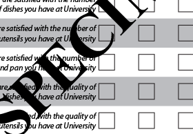
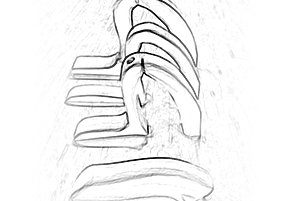
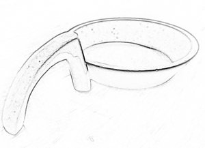
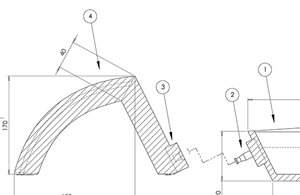
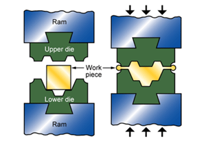

The Brief
“To enable students to use defined professional and creative methodologies to conceive, explore, develop, evaluate, synthesise and realise the design of a product.” is what is stated on the official syllabus. The goal was to create an innovative and cohesive line of kitchen products. The brand would be created as a group and then each member of the group contributed one product to the product line.
Download Design Document
Create a Brand

As a group, we created a brand with a product strategy and identity. Our brand was called Citrus. Our intended customer base was not university students, but instead we targeted student's mothers. This allowed us to create better designed products because parents can spend more than students can. Creating the brand was the only group activity. From this point on, the project was individual.
Research
{kind=link}
I researched the amount of storage space students have available to them in the kitchen. I also researched where students get their kitchen implements from. I wanted to know whether students made the purchases or whether they received them as gifts. Above is a sample survey.
Human Factors
{kind=link}
Using published Anthropometric and Strength Data along with handle prototyping, I was able to devise a different shape for the panhandle. This shape improved the ergonomics of the pan. It allowed the wrist to stay straight while lifting the pan. The shape of the handle also made it small enough to be removed from the pan and fit inside for compact storage. I made several iterations of the handle in foam. They are shown above.
Foam Modeling
{kind=link}
Using the lathe and other machine tools, I made a precise scale model of the pan and the handle. The results are shown above.
CAD Modeling
{kind=link}
Working with Solidworks, I crafted each part and created an assembly drawing. This drawing shows the detachable handle. The detachable handle is designed to fit inside the pan and save space in a student's cupboard.
Mass Manufacture
{kind=link}
I reviewed the CES Materials and Processes database in order to figure out the different manufacturing processes needed to produce my saucepan. These processes were chosen based on a 100,000 unit run.